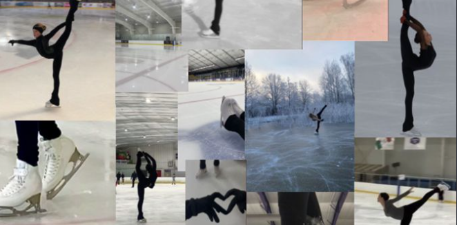
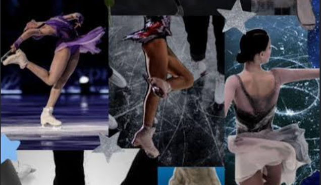
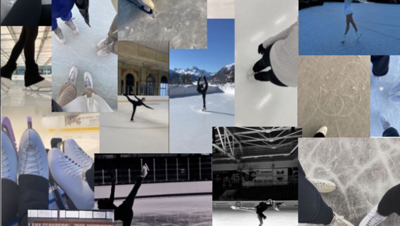
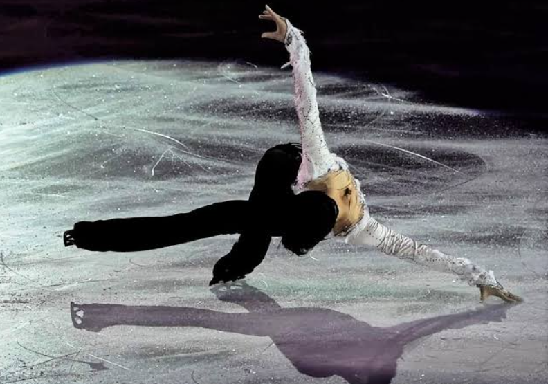
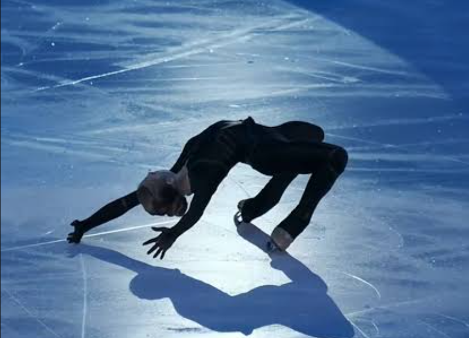

Figure skating is a breathtaking winter sport that seamlessly blends athletic power with artistic elegance. Competitors perform jumps, spins, footwork sequences, and intricate choreographic movements on ice to music. Skaters are judged not only on the technical difficulty of their elements but also on their artistic interpretation, skating skills, and performance execution, making it one of the most popular and captivating events in the Winter Olympic Games.

Yuzuru Hanyu of Japan is widely recognized as one of the greatest figure skaters in history. Known for his perfect fusion of elite technical skill and poetic artistic expression, he captivated audiences worldwide. Hanyu popularized the famous "Hydroblade" move—skating deep on an edge, low to the ice surface. His legendary career includes back-to-back Olympic Gold medals and numerous world records, cementing his legacy as a true icon of the ice.
Alexandra Ignatova (famously known under her maiden name Trusova) revolutionized women's figure skating with her historic jumping ability. Dubbed the "Russian Rocket," she pushed the absolute boundaries of the sport by landing multiple quadruple jumps in a single program, a feat previously thought impossible for female athletes. Her signature move is a breathtakingly low "Cantilever" that showcases extraordinary core strength and flexibility.

| Metric / Attribute | Yuzuru Hanyu (The Ice Prince) | Alexandra Ignatova (The Russian Rocket) |
|---|---|---|
| Country | Japan | Russia |
| Signature Move | Deep Edge Hydroblade | Low-Angle Cantilever | Olympic Medals | 2 Gold Medals (2014 Sochi, 2018 PyeongChang) | 1 Silver Medal (2022 Beijing) |
| Skating Style Focus | Seamless fusion of high-scoring artistry and jumps | High-difficulty, groundbreaking technical quad elements | Historic Legacy | First to break multiple scoring barriers globally | First woman to land 5 quad jumps in an Olympic program |